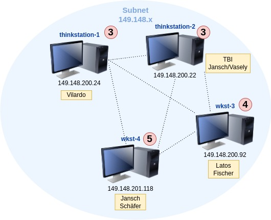

Computational Infraestructure¶
The CACBC-Lab is equiped with the following computational resources:
Hardware¶
There are 2 Lenovo ThinkStations and 2 custom build workstations as follows:
Hostname |
ThinkStation-1 |
ThinkStation-2 |
Workstation-3 |
Workstation-4 |
|---|---|---|---|---|
CPU |
AMD Ryzen Threadripper PRO 3945WX 12-Cores |
AMD Ryzen Threadripper PRO 3945WX 12-Cores |
AMD Ryzen Threadripper 3970X 32-Core Processor |
AMD Ryzen Threadripper 3970X 32-Core Processor |
RAM |
96 GB |
32 GB |
256GB |
256GB |
Disk 1 |
nvme 1TB |
nvme 1TB |
nvme 1TB |
nvme 1TB |
Disk 2 |
nvme 2TB |
nvme 1TB |
nvme 1TB |
|
GPU |
GeForce GT 1030 |
GeForce GT 1030 |
AMD/ATI 743f |
GTX 1650 |
Users Allocation¶
This diagram shows the available computational resources connected in a network. Each machine has a unique name and is accessible via SSH using its IP address. Every machine includes a scratch space for local storage on its hard disk, located at the /srv/<machine_name>/ path. Users have personal scratch directories on assigned machines based on their group association (yellow rectangles). The total number of potential users for each machine is indicated in red circles.
{kind=link}